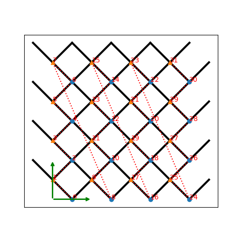

tenpy.models.toric_code module¶
Kitaev’s exactly solvable toric code model.
As we put the model on a cylinder, the name “toric code” is a bit misleading, but it is the established name for this model…
Todo
switch to using the CouplingMPOModel
-
class
tenpy.models.toric_code.DualSquare(Lx, Ly, sites, **kwargs)[source]¶ Bases:
tenpy.models.lattice.LatticeThe dual lattice of the square lattice (again square).
The sites in this lattice correspond to the vertical and horizontal (nearest neighbor) bonds of a common
Squarelattice with the same dimensions Lx, Ly.Parameters: - Lx, Ly : int
Dimensions of the original lattice. This lattice has 2*Lx*Ly sites.
- sites :
Site The sites for the horizontal (first entry) and vertical (second entry) bonds.
- **kwargs :
Additional keyword arguments given to the
Lattice. basis, pos and [[next_]next_]nearest_neighbors are set accordingly.
Attributes: Methods
lat2mps_idx(lat_idx)translate lattice indices (x_0, ..., x_{D-1}, u)to MPS index i.mps2lat_idx(i)translate MPS index i to lattice indices (x_0, ..., x_{D_1}, u)mps2lat_values(A[, axes, u])reshape/reorder A to replace an MPS index by lattice indices. mps_idx_fix_u([u])return an index array of MPS indices for which the site within the unit cell is u. mps_lat_idx_fix_u([u])Similar as mps_idx_fix_u(), but return also the corresponding lattice indices.mps_sites()Return a list [self.site(i) for i in range(self.N_sites)]. number_nearest_neighbors([u])Count the number of nearest neighbors for a site in the bulk. number_next_nearest_neighbors([u])Count the number of next nearest neighbors for a site in the bulk. ordering(order)Provide possible orderings of the N lattice sites. plot_basis(ax, **kwargs)Plot arrows indicating the basis vectors of the lattice plot_bc_identified(ax[, direction, shift])Mark two sites indified by periodic boundary conditions plot_coupling(ax[, coupling])Plot lines connecting nearest neighbors of the lattice. plot_order(ax[, order, textkwargs])Plot a line connecting sites in the specified “order” and text labels enumerating them. plot_sites(ax[, markers])Plot the sites of the lattice with markers. position(lat_idx)return ‘space’ position of one or multiple sites. possible_couplings(u1, u2, dx)Find possible MPS indices for two-site couplings. possible_multi_couplings(u0, other_us, dx)Generalization of possible_couplings()to couplings with more than 2 sites.site(i)return Siteinstance corresponding to an MPS index itest_sanity()Sanity check. -
dim¶ The dimension of the lattice.
-
lat2mps_idx(lat_idx)¶ translate lattice indices
(x_0, ..., x_{D-1}, u)to MPS index i.
-
mps2lat_idx(i)¶ translate MPS index i to lattice indices
(x_0, ..., x_{D_1}, u)
-
mps2lat_values(A, axes=0, u=None)¶ reshape/reorder A to replace an MPS index by lattice indices.
Parameters: - A : ndarray
some values. Must have
A.shape[axes] = self.N_sitesif u isNone, orA.shape[axes] = self.N_cellsif u is an int.- axes : (iterable of) int
chooses the axis which should be replaced.
- u :
None| int Optionally choose a subset of MPS indices present in the axes of A, namely the indices corresponding to
self.unit_cell[u], as returned bymps_idx_fix_u(). The resulting array will not have the additional dimension(s) of u.
Returns: - res_A : ndarray
reshaped and reordered verions of A. Such that an MPS index j is replaced by
res_A[..., self.order, ...] = A[..., np.arange(self.N_sites), ...]
Examples
Say you measure expection values of an onsite term for an MPS, which gives you an 1D array A, where A[i] is the expectation value of the site given by
self.mps2lat_idx(i). Then this function gives you the expectation values ordered by the lattice:>>> print(lat.shape, A.shape) (10, 3, 2) (60,) >>> A_res = lat.mps2lat_values(A) >>> A_res.shape (10, 3, 2) >>> A_res[lat.mps2lat_idx(5)] == A[5] True
If you have a correlation function
C[i, j], it gets just slightly more complicated:>>> print(lat.shape, C.shape) (10, 3, 2) (60, 60) >>> lat.mps2lat_values(C, axes=[0, 1]).shape (10, 3, 2, 10, 3, 2)
If the unit cell consists of different physical sites, an onsite operator might be defined only on one of the sites in the unit cell. Then you can use
mps_idx_fix_u()to get the indices of sites it is defined on, measure the operator on these sites, and use the argument u of this function. say y>>> u = 0 >>> idx_subset = lat.mps_idx_fix_u(u) >>> A_u = A[idx_subset] >>> A_u_res = lat.mps2lat_values(A_u, u=u) >>> A_u_res.shape (10, 3) >>> np.all(A_res[:, :, u] == A_u_res[:, :]) True
Todo
make sure this function is used for expectation values…
-
mps_idx_fix_u(u=None)¶ return an index array of MPS indices for which the site within the unit cell is u.
If you have multiple sites in your unit-cell, an onsite operator is in general not defined for all sites. This functions returns an index array of the mps indices which belong to sites given by
self.unit_cell[u].Parameters: - u : None | int
Selects a site of the unit cell.
None(default) means all sites.
Returns: - mps_idx : array
MPS indices for which
self.site(i) is self.unit_cell[u]. Ordered ascending.
-
mps_lat_idx_fix_u(u=None)¶ Similar as
mps_idx_fix_u(), but return also the corresponding lattice indices.Parameters: - u : None | int
Selects a site of the unit cell.
None(default) means all sites.
Returns: - mps_idx : array
MPS indices i for which
self.site(i) is self.unit_cell[u].- lat_idx : 2D array
The row j contains the lattice index (without u) corresponding to
mps_idx[j].
-
mps_sites()¶ Return a list [self.site(i) for i in range(self.N_sites)].
This should be used for sites of 1D tensor networks (MPS, MPO,…).
-
number_nearest_neighbors(u=0)¶ Count the number of nearest neighbors for a site in the bulk.
Requires
nearest_neighborsto be set.Parameters: - u : int
Specifies the site in the unit cell.
Returns: - number_NN : int
Number of nearest neighbors of the u-th site in the unit cell in the bulk of the lattice. Note that it might be different at the edges of the lattice for open boundary conditions.
-
number_next_nearest_neighbors(u=0)¶ Count the number of next nearest neighbors for a site in the bulk.
Requires
next_nearest_neighborsto be set.Parameters: - u : int
Specifies the site in the unit cell.
Returns: - number_NNN : int
Number of next nearest neighbors of the u-th site in the unit cell in the bulk of the lattice. Note that it might be different at the edges of the lattice for open boundary conditions.
-
order¶ Defines an ordering of the lattice sites, thus mapping the lattice to a 1D chain.
This order defines how an MPS/MPO winds through the lattice.
-
ordering(order)¶ Provide possible orderings of the N lattice sites.
This function can be overwritten by derived lattices to define additional orderings. The following orders are defined in this method:
order equivalent priority equivalent snake_winding'Cstyle'(0, 1, …, dim-1, dim) (False, …, False, False) 'default''snake'(0, 1, …, dim-1, dim) (True, …, True, True) 'snakeCstyle''Fstyle'(dim-1, …, 1, 0, dim) (False, …, False, False) 'snakeFstyle'(dim-1, …, 1, 0, dim) (False, …, False, False) Parameters: - order : str |
('standard', snake_winding, priority)|('grouped', groups) Specifies the desired ordering using one of the strings of the above tables. Alternatively, an ordering is specified by a tuple with first entry specifying a function,
'standard'forget_order()and'grouped'forget_order_grouped(), and other arguments in the tuple as specified in the documentation of these functions.
Returns: - order : array, shape (N, D+1), dtype np.intp
the order to be used for
order.
See also
get_order()- generates the order from equivalent priority and snake_winding.
get_order_grouped()- variant of get_order.
plot_order()- visualizes the resulting order.
- order : str |
-
plot_basis(ax, **kwargs)¶ Plot arrows indicating the basis vectors of the lattice
Parameters: - ax :
matplotlib.axes.Axes The axes on which we should plot.
- **kwargs :
Keyword arguments specifying the “arrowprops” of
ax.annotate.
- ax :
-
plot_bc_identified(ax, direction=-1, shift=None, **kwargs)¶ Mark two sites indified by periodic boundary conditions
Works only for lattice with a 2-dimensional basis.
Parameters: - ax :
matplotlib.axes.Axes The axes on which we should plot.
- direction : int
The direction of the lattice along which we should mark the idenitified sites. If
None, mark it along all directions with periodic boundary conditions.- shift : None | np.ndarray
The origin starting from where we mark the identified sites. Defaults to the first entry of
unit_cell_positions.- **kwargs :
Keyword arguments for the used
ax.plot.
- ax :
-
plot_coupling(ax, coupling=None, **kwargs)¶ Plot lines connecting nearest neighbors of the lattice.
Parameters: - ax :
matplotlib.axes.Axes The axes on which we should plot.
- coupling : list of (u1, u2, dx)
By default (
None), use :attr:nearest_neighbors. Specifies the connections to be plotted; iteating over lattice indices (i0, i1, …), we plot a connection from the site(i0, i1, ..., u1)to the site(i0+dx[0], i1+dx[1], ..., u2), taking into account the boundary conditions.- **kwargs :
Further keyword arguments given to
ax.plot().
- ax :
-
plot_order(ax, order=None, textkwargs={}, **kwargs)¶ Plot a line connecting sites in the specified “order” and text labels enumerating them.
Parameters: - ax :
matplotlib.axes.Axes The axes on which we should plot.
- order : None | 2D array (self.N_sites, self.dim+1)
The order as returned by
ordering(); by default (None) useorder.- textkwargs: ``None`` | dict
If not
None, we add text labels enumerating the sites in the plot. The dictionary can contain keyword arguments forax.text().- **kwargs :
Further keyword arguments given to
ax.plot().
- ax :
-
plot_sites(ax, markers=['o', '^', 's', 'p', 'h', 'D'], **kwargs)¶ Plot the sites of the lattice with markers.
Parameters: - ax :
matplotlib.axes.Axes The axes on which we should plot.
- markers : list
List of values for the keywork marker of
ax.plot()to distinguish the different sites in the unit cell, a site u in the unit cell is plotted with a markermarkers[u % len(markers)].- **kwargs :
Further keyword arguments given to
ax.plot().
- ax :
-
position(lat_idx)¶ return ‘space’ position of one or multiple sites.
Parameters: - lat_idx : ndarray,
(... , dim+1) Lattice indices.
Returns: - pos : ndarray,
(..., dim) The position of the lattice sites specified by lat_idx in real-space.
- lat_idx : ndarray,
-
possible_couplings(u1, u2, dx)¶ Find possible MPS indices for two-site couplings.
For periodic boundary conditions (
bc[a] == False) the indexx_ais taken moduloLs[a]and runs throughrange(Ls[a]). For open boundary conditions,x_ais limited to0 <= x_a < Ls[a]and0 <= x_a+dx[a] < lat.Ls[a].Parameters: - u1, u2 : int
Indices within the unit cell; the u1 and u2 of
add_coupling()- dx : array
Length
dim. The translation in terms of basis vectors for the coupling.
Returns: - mps1, mps2 : array
For each possible two-site coupling the MPS indices for the u1 and u2. MPS indices for to be connected by the coupling.
- lat_indices : array, shape = (len(mps1), dim)
Corresponding indices in the lattice. The entries are in the “bottom left corner”.
- coupling_shape : tuple of int
Len
dim. The correct shape for an array specifying the coupling strength. lat_indices has only rows within this shape.
-
possible_multi_couplings(u0, other_us, dx)¶ Generalization of
possible_couplings()to couplings with more than 2 sites.
-
site(i)¶ return
Siteinstance corresponding to an MPS index i
-
test_sanity()¶ Sanity check. Raises ValueErrors, if something is wrong.
-
class
tenpy.models.toric_code.ToricCode(model_params)[source]¶ Bases:
tenpy.models.model.MultiCouplingModel,tenpy.models.model.MPOModelSpin-S sites coupled by nearest neighbour interactions.
The Hamiltonian reads:
\[H = - \mathtt{Jv} \sum_{vertices v} \prod_{i \in v} \sigma^x_i - \mathtt{Jp} \sum_{plaquettes p} \prod_{i \in p} \sigma^z_i\](Note that this are Pauli matrices, not spin-1/2 operators.) All parameters are collected in a single dictionary model_params and read out with
get_parameter().Parameters: - Lx, Ly : int
Dimension of the lattice, number of plaquettes around the cylinder.
- conserve : ‘parity’ | None
What should be conserved. See
SpinHalfSite.- Jc, Jp: float | array
Couplings as defined for the Hamiltonian above.
- bc_MPS : {‘finite’ | ‘infinte’}
MPS boundary conditions. Coupling boundary conditions are chosen appropriately.
- order : str
The order of the lattice sites in the lattice, see
DualSquare.
Methods
add_coupling(strength, u1, op1, u2, op2, dx)Add twosite coupling terms to the Hamiltonian, summing over lattice sites. add_coupling_term(strength, i, j, op_i, op_j)Add a two-site coupling term on given MPS sites. add_multi_coupling(strength, u0, op0, other_ops)Add multi-site coupling terms to the Hamiltonian, summing over lattice sites. add_multi_coupling_term(strength, ijkl, …)Add a multi-site coupling term on given MPS sites. add_onsite(strength, u, opname)Add onsite terms to self. add_onsite_term(strength, i, op)Add a onsite term on a given MPS site. calc_H_MPO([tol_zero])Calculate MPO representation of the Hamiltonian. calc_H_bond([tol_zero])calculate H_bond from self.coupling_terms and self.H_onsite. calc_H_bond_from_MPO([tol_zero])Calculate the bond Hamiltonian from the MPO Hamiltonian. calc_H_onsite([tol_zero])Calculate H_onsite from self.onsite_terms. coupling_strength_add_ext_flux(strength, dx, …)Add an external flux to the coupling strength. group_sites([n, grouped_sites])Modify self in place to group sites. plot_coupling_terms(ax[, style_map])“Plot coupling terms into a given lattice. test_sanity()Sanity check. -
add_coupling(strength, u1, op1, u2, op2, dx, op_string=None, str_on_first=True, raise_op2_left=False)¶ Add twosite coupling terms to the Hamiltonian, summing over lattice sites.
Represents couplings of the form \(\sum_{x_0, ..., x_{dim-1}} strength[loc(\vec{x})] * OP1 * OP2\), where
OP1 := lat.unit_cell[u1].get_op(op1)acts on the site(x_0, ..., x_{dim-1}, u1), andOP2 := lat.unit_cell[u2].get_op(op2)acts on the site(x_0+dx[0], ..., x_{dim-1}+dx[dim-1], u2). Possible combinationsx_0, ..., x_{dim-1}are determined from the boundary conditions inpossible_couplings().The coupling strength may vary spatially, \(loc(\vec{x})\) indicates the lower left corner of the hypercube containing the involved sites \(\vec{x}\) and \(\vec{x}+\vec{dx}\).
The necessary terms are just added to
coupling_terms; doesn’t rebuild the MPO.Parameters: - strength : scalar | array
Prefactor of the coupling. May vary spatially (see above). If an array of smaller size is provided, it gets tiled to the required shape.
- u1 : int
Picks the site
lat.unit_cell[u1]for OP1.- op1 : str
Valid operator name of an onsite operator in
lat.unit_cell[u1]for OP1.- u2 : int
Picks the site
lat.unit_cell[u2]for OP2.- op2 : str
Valid operator name of an onsite operator in
lat.unit_cell[u2]for OP2.- dx : iterable of int
Translation vector (of the unit cell) between OP1 and OP2. For a 1D lattice, a single int is also fine.
- op_string : str | None
Name of an operator to be used between the OP1 and OP2 sites. Typical use case is the phase for a Jordan-Wigner transformation. The operator should be defined on all sites in the unit cell. If
None, auto-determine whether a Jordan-Wigner string is needed, usingop_needs_JW().- str_on_first : bool
Wheter the provided op_string should also act on the first site. This option should be chosen as
Truefor Jordan-Wigner strings. When handling Jordan-Wigner strings we need to extend the op_string to also act on the ‘left’, first site (in the sense of the MPS ordering of the sites given by the lattice). In this case, there is a well-defined ordering of the operators in the physical sense (i.e. which of op1 or op2 acts first on a given state). We follow the convention that op2 acts first (in the physical sense), independent of the MPS ordering.- raise_op2_left : bool
Raise an error when op2 appears left of op1 (in the sense of the MPS ordering given by the lattice).
Examples
When initializing a model, you can add a term :math:` J sum_{<i,j>} S^z_i S^z_j` on all nearest-neighbor bonds of the lattice like this:
>>> J = 1. # the strength >>> for u1, u2, dx in self.lat.nearest_neighbors: ... self.add_coupling(J, u1, 'Sz', u2, 'Sz', dx)
The strength can be an array, which get’s tiled to the correct shape. For example, in a 1D :class`~tenpy.models.lattice.Chain` with an even number of sites and periodic (or infinite) boundary conditions, you can add alternating strong and weak couplings with a line like:
>>> self.add_coupling([1.5, 1.], 0, 'Sz', 0, 'Sz', dx)
To add the hermitian conjugate, e.g. for a hopping term, you should add it in the opposite direction
-dx, complex conjugate the strength, and take the hermitian conjugate of the operators in swapped order (including a swap of u1 <-> u2). For spin-less fermions (FermionSite), this would be>>> t = 1. # hopping strength >>> for u1, u2, dx in self.lat.nearest_neighbors: ... self.add_coupling(t, u1, 'Cd', u2, 'C', dx) ... self.add_coupling(np.conj(t), u2, 'Cd', u1, 'C', -dx) # h.c.
With spin-full fermions (
SpinHalfFermions), it could be:>>> for u1, u2, dx in self.lat.nearest_neighbors: ... self.add_coupling(t, u1, 'Cdu', u2, 'Cd', dx) # Cdagger_up C_down ... self.add_coupling(np.conj(t), u2, 'Cdd', u1, 'Cu', -dx) # h.c. Cdagger_down C_up
-
add_coupling_term(strength, i, j, op_i, op_j, op_string='Id')¶ Add a two-site coupling term on given MPS sites.
Parameters: - strength : float
The strength of the coupling term.
- i, j : int
The MPS indices of the two sites on which the operator acts. We require
0 <= i < N_sitesandi < j, i.e., op_i acts “left” of op_j. If j >= N_sites, it indicates couplings between unit cells of an infinite MPS.- op1, op2 : str
Names of the involved operators.
- op_string : str
The operator to be inserted between i and j.
-
add_multi_coupling(strength, u0, op0, other_ops, op_string=None)¶ Add multi-site coupling terms to the Hamiltonian, summing over lattice sites.
Represents couplings of the form \(sum_{x_0, ..., x_{dim-1}} strength[loc(\vec{x})] * OP0 * OP1 * ... * OPM\), where
OP_0 := lat.unit_cell[u0].get_op(op0)acts on the site(x_0, ..., x_{dim-1}, u0), andOP_m := lat.unit_cell[other_u[m]].get_op(other_op[m]), m=1…M, acts on the site(x_0+other_dx[m][0], ..., x_{dim-1}+other_dx[m][dim-1], other_u[m]). For periodic boundary conditions along direction a (lat.bc[a] == False) the indexx_ais taken modulolat.Ls[a]and runs throughrange(lat.Ls[a]). For open boundary conditions,x_ais limited to0 <= x_a < Ls[a]and0 <= x_a+other_dx[m,a] < lat.Ls[a]. The coupling strength may vary spatially, \(loc(\vec{x})\) indicates the lower left corner of the hypercube containing all the involved sites \(\vec{x}, \vec{x}+\vec{other_dx[m, :]}\).The necessary terms are just added to
coupling_terms; doesn’t rebuild the MPO.Parameters: - strength : scalar | array
Prefactor of the coupling. May vary spatially and is tiled to the required shape.
- u0 : int
Picks the site
lat.unit_cell[u0]for OP0.- op0 : str
Valid operator name of an onsite operator in
lat.unit_cell[u0]for OP0.- other_ops : list of
(u, op_m, dx) One tuple for each of the other operators
OP1, OP2, ... OPMinvolved. u picks the sitelat.unit_cell[u], op_name is a valid operator acting on that site, and dx gives the translation vector betweenOP0and the specified operator.- op_string : str | None
Name of an operator to be used inbetween the operators, excluding the sites on which the operators act. This operator should be defined on all sites in the unit cell.
Special case: If
None, auto-determine whether a Jordan-Wigner string is needed (usingop_needs_JW()), for each of the segments inbetween the operators and also on the sites of the left operators. Note that in this case the ordering of the operators is important and handled in the usual convention thatOPMacts first andOP0last on a physical state.
-
add_multi_coupling_term(strength, ijkl, ops_ijkl, op_string)¶ Add a multi-site coupling term on given MPS sites.
Parameters: - strength : float
The strength of the coupling term.
- ijkl : list of int
The MPS indices of the sites on which the operators acts. With i, j, k, … = ijkl, we require that they are ordered ascending,
i < j < k < ...and that0 <= i < N_sites. Inidces >= N_sites indicate couplings between different unit cells of an infinite MPS.- ops_ijkl : list of str
Names of the involved operators on sites i, j, k, ….
- op_string : list of str
Names of the operator to be inserted between the operators, e.g., op_string[0] is inserted between i and j.
-
add_onsite(strength, u, opname)¶ Add onsite terms to self.
Adds a term \(\sum_{x_0, ..., x_{dim-1}} strength[x_0, ..., x_{dim-1}] * OP\), where the operator
OP=lat.unit_cell[u].get_op(opname)acts on the site given by a lattice index(x_0, ..., x_{dim-1}, u), to the represented Hamiltonian.The necessary terms are just added to
onsite_terms; doesn’t rebuild the MPO.Parameters: - strength : scalar | array
Prefactor of the onsite term. May vary spatially. If an array of smaller size is provided, it gets tiled to the required shape.
- u : int
Picks a
Sitelat.unit_cell[u]out of the unit cell.- opname : str
valid operator name of an onsite operator in
lat.unit_cell[u].
-
add_onsite_term(strength, i, op)¶ Add a onsite term on a given MPS site.
Parameters: - strength : float
The strength of the term.
- i : int
The MPS index of the site on which the operator acts. We require
0 <= i < L.- op : str
Name of the involved operator.
-
calc_H_MPO(tol_zero=1e-15)¶ Calculate MPO representation of the Hamiltonian.
Uses
onsite_termsandcoupling_termsto build an MPO graph (and then an MPO).Parameters: - tol_zero : float
Prefactors with
abs(strength) < tol_zeroare considered to be zero.
Returns: - H_MPO :
MPO MPO representation of the Hamiltonian.
-
calc_H_bond(tol_zero=1e-15)¶ calculate H_bond from self.coupling_terms and self.H_onsite.
If
self.H_onsite is None, it is calculated withself.calc_H_onsite().Parameters: - tol_zero : float
prefactors with
abs(strength) < tol_zeroare considered to be zero.
Returns: - H_bond : list of
Array Bond terms as required by the constructor of
NearestNeighborModel. Legs are['p0', 'p0*', 'p1', 'p1*']
Raises: - ValueError : if the Hamiltonian contains longer-range terms.
-
calc_H_bond_from_MPO(tol_zero=1e-15)¶ Calculate the bond Hamiltonian from the MPO Hamiltonian.
Parameters: - tol_zero : float
Arrays with norm < tol_zero are considered to be zero.
Returns: - H_bond : list of
Array Bond terms as required by the constructor of
NearestNeighborModel. Legs are['p0', 'p0*', 'p1', 'p1*']
Raises: - ValueError : if the Hamiltonian contains longer-range terms.
-
calc_H_onsite(tol_zero=1e-15)¶ Calculate H_onsite from self.onsite_terms.
Parameters: - tol_zero : float
prefactors with
abs(strength) < tol_zeroare considered to be zero.
Returns: - H_onsite : list of npc.Array
onsite terms of the Hamiltonian.
-
coupling_strength_add_ext_flux(strength, dx, phase)¶ Add an external flux to the coupling strength.
When performing DMRG on a “cylinder” geometry, it might be useful to put an “external flux” through the cylinder. This means that a particle hopping around the cylinder should pick up a phase given by the external flux [Resta1997]. This is also called “twisted boundary conditions” in literature. This function adds a complex phase to the strength array on some bonds, such that particles hopping in positive direction around the cylinder pick up exp(+i phase).
Warning
For the sign of phase it is important that you consistently use the creation operator as op1 and the annihilation operator as op2 in :meth:`add_coupling”.
Parameters: - strength : scalar | array
The strength to be used in
add_coupling(), when no external flux would be present.- dx : iterable of int
Translation vector (of the unit cell) between op1 and op2 in
add_coupling().- phase : iterable of float
The phase of the external flux for hopping in each direction of the lattice. E.g., if you want flux through the cylinder on which you have an infinite MPS, you should give
phase=[0, phi]souch that particles pick up a phase phi when hopping around the cylinder.
Returns: - strength : complex array
The strength array to be used as strength in
add_coupling()with the given dx.
Examples
Let’s say you have an infinite MPS on a cylinder, and want to add nearest-neighbor hopping of fermions with the
FermionSite. The cylinder axis is the x-direction of the lattice, so to put a flux through the cylinder, you want particles hopping around the cylinder to pick up a phase phi given by the external flux.>>> strength = 1. # hopping strength without external flux >>> phi = np.pi/4 # determines the external flux strength >>> strength_with_flux = self.coupling_strength_add_ext_flux(strength, dx, [0, phi]) >>> for u1, u2, dx in self.lat.nearest_neighbors: ... self.add_coupling(strength_with_flux, u1, 'Cd', u2, 'C', dx) ... self.add_coupling(np.conj(strength_with_flux), u2, 'Cd', u1, 'C', -dx)
-
group_sites(n=2, grouped_sites=None)¶ Modify self in place to group sites.
Group each n sites together using the
GroupedSite. This might allow to do TEBD with a Trotter decomposition, or help the convergence of DMRG (in case of too long range interactions).This has to be done after finishing initialization and can not be reverted.
Parameters: - n : int
Number of sites to be grouped together.
- grouped_sites : None | list of
GroupedSite The sites grouped together.
Returns: - grouped_sites : list of
GroupedSite The sites grouped together.
-
plot_coupling_terms(ax, style_map=None)¶ “Plot coupling terms into a given lattice.
This function plots the
coupling_termsParameters: - ax :
matplotlib.axes.Axes The axes on which we should plot.
- style_map : function
Get’s called with arguments
i, j, op_i, op_strength, op_j, strengthfor each two-site coupling and should return a keyword-dictionary with the desired plot-style for this combination. By default (None), the linecolor depends on the phase of strength, the linewidth is given by the phase of strength (using the hsv colormap), and the linestyle depends on the type of operators coupled.
See also
tenpy.models.lattice.Lattice.plot_sites()- plot the sites of the lattice.
- ax :
-
test_sanity()¶ Sanity check. Raises ValueErrors, if something is wrong.